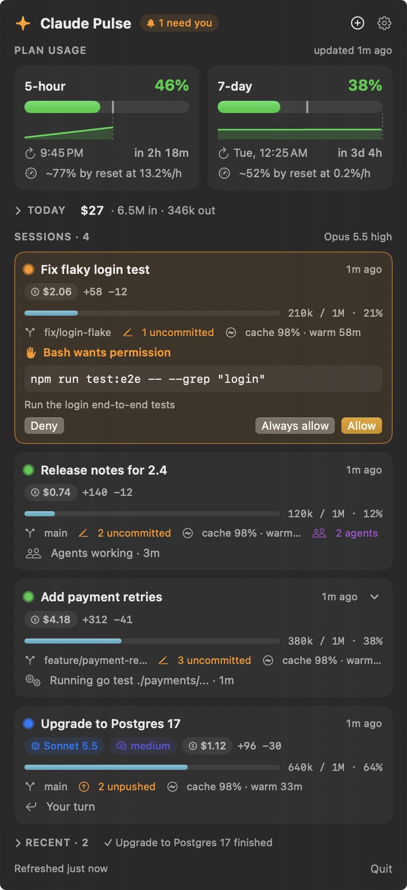
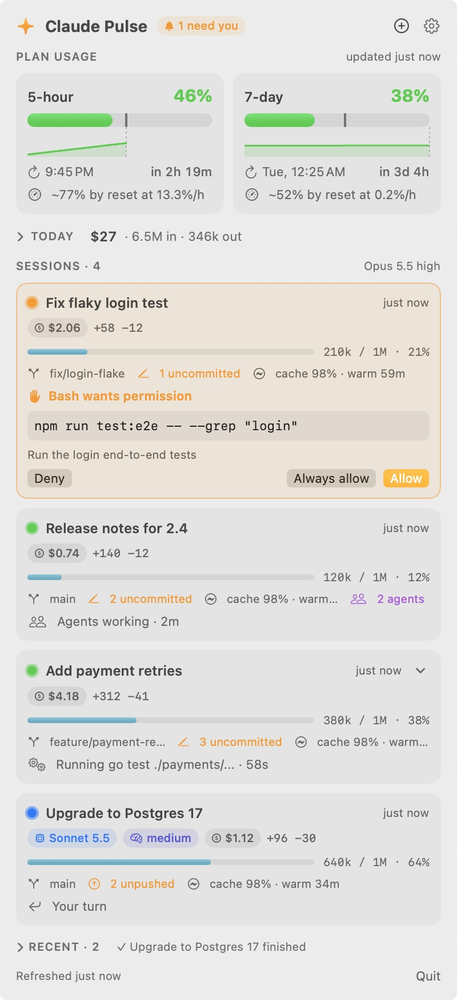

Claude Pulse lives in your menu bar. See your 5-hour and weekly limits, what each session is doing right now, and answer permission prompts without hunting for the right terminal.
No account, no API key, no network calls you didn't turn on. Unofficial; not affiliated with Anthropic.

Claude Pulse reads what Claude Code already reports and turns it into one calm panel and a few useful alerts.
5-hour and 7-day usage, reset times in your time zone, a history chart, and where you'll land at this pace.
Permission prompts show the exact command with Allow, Always allow and Deny, in the panel and in the notification. The terminal prompt stays open too.
"Running go test · 42s", "Editing retry.go", background agents, failed commands, and a warning when a session looks stuck.
A notification when a session finishes, with how long it worked and its first line. Click it to jump to that terminal.
Uncommitted and unpushed changes per session, plus prompt-cache state: "cache 98% · warm 41m", or "cold" when the next message costs more.
API-equivalent cost and tokens by model and project, each session's share of the last hour, an optional daily budget, and CSV export.
Only a permission prompt counts as "needs you". Everything else waits quietly until you look.
⌃⌥C opens the panel, ⌘↩ allows the top prompt.
Requires macOS 14 or later and Claude Code. Plan limits appear on Pro and Max plans.
Get the latest .dmg from Releases, open it and drag Claude Pulse to Applications.
The app isn't notarized yet, so macOS asks once. Open System Settings → Privacy & Security → Open Anyway, or run:
xattr -dr com.apple.quarantine /Applications/ClaudePulse.app
Click the menu bar icon, then Connect. It adds a status line and a few hooks to ~/.claude/settings.json (backup saved first). Restart your Claude Code sessions.
Short answers. The README has the details.
No. It reads the status and usage numbers Claude Code already reports, plus git status counts. Nothing leaves your Mac unless you turn on phone alerts.
No. It never touches the Keychain and uses no undocumented APIs. Limits come from Claude Code's own status line data.
A check of status.claude.com every 5 minutes and GitHub's latest release every 12 hours. Both can be turned off in Settings → Online.
Settings → Disconnect removes only its entries and restores your old status line. Then delete the app.